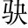
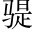

鄒陽齊人。從樑孝王景帝少弟。遊。陽為人有智略，忼慨不苟合，介於羊勝、公孫詭之間介，間廁也。勝、詭，皆孝王客。。勝等疾陽，惡之孝王惡，謂讒毀也。。孝王怒，下陽吏，將殺之。陽乃從獄中上書曰：
「臣聞「忠無不報，信不見疑」「忠」、「信」二字，一篇關鍵。，臣常以為然，徒虛語耳起便跌宕。。昔荊軻慕燕丹之義，白虹貫日，太子畏之荊軻為燕太子丹西刺秦王，精誠格天，白虹為之貫日。白虹，兵象。日為君，為荊軻表可克之兆。太子尚畏而不信也。；衛先生為秦畫長平之事，太白食昴，昭王疑之白起為秦伐趙，破長平軍，欲遂滅趙，遣衛先生說昭王益兵糧。其精誠上達於天，太白為之食昴。太白，天之將軍。昴，趙分也。將有兵，故太白食昴。昭王尚疑而不信也。。夫精變天地，而信不諭兩主，豈不哀哉變，動也。諭，曉也。！今臣盡忠竭誠，畢議願知盡其計議，願王知之。，左右不明，卒從吏訊，為世所疑言左右不明，不欲斥王也。訊，鞠問也。。是使荊軻、衛先生復起，而燕、秦不寤也。願大王熟察之。
「昔玉人獻寶，楚王誅之楚卞和得玉璞，獻之武王。王示玉人，曰：「石也。」刖其右足。武王沒，復獻文王，玉人復曰：「石也。」刖其左足。至成王時，抱其璞哭於郊。乃使玉人攻之，果得寶玉。；李斯竭忠，胡亥極刑秦始皇以李斯為丞相，始皇崩，二世胡亥立，殺李斯，具五刑。。是以箕子陽狂，接輿避世紂淫亂不止，箕子陽狂為奴。接輿，楚賢人，陽狂避世。，恐遭此患也。願大王察玉人、李斯之意，而後楚王、胡亥之聽，毋使臣為箕子、接輿所笑。臣聞比干剖心，子胥鴟夷比干強諫，紂怒曰：「吾聞聖人心有七竅。」遂剖比干觀其心。子胥自刎，吳王夫差取馬革為鴟夷形，盛子胥屍，投之江。，臣始不信，乃今知之。願大王熟察，少加憐焉以上自謂忠而獲罪，信而見疑，故引荊軻、衛先生之事明之，又引玉人、李斯、比干、子胥足其意，是為第一段。！
「語曰：「有白頭如新，傾蓋如故白頭，初相識至頭白也。傾蓋者，道行相遇，駐車對語，兩蓋相交，小敧之義也。。」何則？知與不知也提出「知」字，開下文之論端。。故樊於期逃秦之燕，藉荊軻首以奉丹事於期為秦將，被讒，走之燕，始皇滅其家，又重購之，會燕太子丹遣荊軻欲刺秦王，無以為藉，於期自刎首，令荊軻齎往。；王奢去齊之魏，臨城自剄，以卻齊而存魏王奢，齊臣也，亡至魏，其後齊伐魏，奢登城謂齊將曰：「今君之來，不過以奢故也，義不苟生，以為魏累。」遂自剄。。夫王奢、樊於期非新於齊、秦而故於燕、魏也，所以去二國死兩君者，行合於志，慕義無窮也是為真知。。是以蘇秦不信於天下，為燕尾生蘇秦說齊宣王，使還燕十城，又令閔王厚葬以弊齊，終死於燕，是蘇秦不出其信於天下，於燕則為尾生之信也。尾生，古之信士，守志亡軀，故以為喻。；白圭戰亡六城，為魏取中山白圭為中山將，亡六城，君欲殺之，亡入魏，文侯厚遇之，還拔中山。。何則？誠有以相知也應醒「知」字。。蘇秦相燕，人惡之燕王，燕王按劍而怒，食寺。以決。題。○反食蘇秦以異味。；白圭顯於中山，駿馬名。，人惡之於魏文侯，文侯賜以夜光之璧拔中山而尊顯。。何則？兩主二臣，剖心析肝相信，豈移於浮辭哉反賜白圭以奇珍。○又申說一遍。！
「故女無美惡，入宮見妒；士無賢不肖，入朝見嫉承上起下。。昔司馬喜臏頻上聲。腳於宋，卒相中山司馬喜，六國時人。臏，刖刑，去膝蓋骨。；范雎拉蠟。脅折齒於魏，卒為應侯范雎，魏人，魏相魏齊疑其以國陰事告齊，乃掠笞敷百，拉脅折齒。後入秦為相，封為應侯。拉，亦折也。。此二人者，皆信必然之畫畫，計也。，捐朋黨之私，挾孤獨之交，故不能自免於嫉妒之人也以之自況。。是以申徒狄蹈雍之河申徒狄，殷末人，自沉於雍州之河。，徐衍負石入海徐衍，週末人，負石自投於海。。不容於世，義不苟取比周於朝以移主上之心雖不見容，終不苟且朋黨於朝，以感動主上之心。。故百里奚乞食於道路，繆公委之以政百里奚聞秦繆公賢，欲往幹之，乏資，乞食以自致。；甯戚飯牛車下，桓公任之以國甯戚為人飯牛車下，扣牛角而歌，齊桓公聞之，舉以為相。。此二人者，豈素宦於朝，借譽於左右，然後二主用之哉？感於心，合於行，堅如膠漆，昆弟不能離，豈惑於眾口哉又將相知意結，下復就嫉妒深一層說。？故偏聽生奸，獨任成亂。昔魯聽季孫之說逐孔子齊人歸女樂，季桓子受之，三日不朝，孔子行。，宋任子冉之計囚墨翟子冉，子罕也。。夫以孔、墨之辯，不能自免於讒諛，而二國以危。何則？眾口鑠金，積毀銷骨也美金見毀，眾共疑之，數被燒煉，以致銷鑠。讒佞之人，肆其詐巧，離散骨肉，而不覺知。○偏聽獨任，痛心千古。。秦用戎人由余而伯中國秦穆公求士，西取由余於戎。，齊用越人子臧而強威、宣齊任子臧，威、宣二王所以強盛。。此二國豈繫於俗，牽於世，系奇偏之浮辭哉？公聽並觀，垂明當世公聽並觀，與上偏聽獨任相反。。故意合則胡越為兄弟，由余、子臧是矣；不合則骨肉為仇敵，朱、象、管、蔡是矣朱，丹朱，堯子。象，舜弟。管、蔡，管叔、蔡叔。○上無朱、象、管、蔡，忽然插入，古文奇恣不抱如此。。今人主誠能用齊、秦之明，後宋、魯之聽，則五伯不足侔，而三王易為也以上思其不見知之由在於無朋黨之私，被讒佞之口，故引司馬喜、范雎、申徒狄、徐衍四人為無朋黨之證，引齊、秦、宋、魯四君為信讒、不信讒之證。是為第三段。。
「是以聖王覺寤，捐子之之心，而不說田常之賢燕王噲欲禪國於其相子之，國乃大亂。田常，陳恆也，齊簡公悅之，而被弒。，封比干之後，修孕婦之墓武王克商，反其故政，乃封修之。孕婦，紂刳妊者，觀其胎。，故功業覆於天下。何則？欲善無厭也。夫晉文親其仇，強伯諸侯；齊桓用其仇，而一匡天下寺人披為晉獻公逐文公，斬其袪，後文公即位，用其言以免呂卻之難。管仲射中桓公帶鉤，而用為相。。何則？慈仁殷勤，誠加於心，不可以虛辭借也桓、文欲善無厭。。至夫秦用商鞅之法，東弱韓、魏，立強天下，卒車裂之。越用大夫種之謀，禽同「擒」。勁吳而伯中國，遂誅其身秦孝公用衛鞅，封為商君，後犯罪以車裂之。越王勾踐用文種，敗吳王夫差，後被讒賜死。○秦、越待士，有始無終，不能欲善無厭也。。是以孫叔敖三去相而不悔，於烏。陵子仲辭三公為人灌園孫叔敖三為楚相，三去之而不怨悔。楚王聞陳仲子賢，欲以為相，仲子夫妻相與逃而為人灌園。○恐始榮而終敗也。。今人主誠能去驕傲之心，懷可報之意士有功可報者思必報。，披心腹披，開也。，見情素，墮肝膽墮，落也。，施德厚，終與之窮達，無愛於士待士有終，與之窮達如一，無所吝惜於士也。，則桀之犬可使吠廢。堯，跖之客可使刺由跖，盜跖。由，許由。此言被之以恩，則用命也。，何況因萬乘之權，假聖王之資乎！然則荊軻湛同「沉」。七族，要腰。離燔妻子荊軻為燕刺秦王，不成而死，其族坐之。湛，沒也。吳王闔閭欲殺王子慶忌，要離詐以罪亡，令吳王燔其妻子，要離走見慶忌，以劍刺之。，豈足為大王道哉言士皆樂為之用也。○以上思其朋黨得援、讒佞得行，皆因於人主之不能欲善無厭，故歷引桓、文、秦、越反覆明之。是為第四段。！
「臣聞明月之珠，夜光之璧，以闇同「暗」。投人於道，眾莫不按劍相眄勉。者眄，目偏合也。。何則？無因而至前也。蟠盤。木根柢底。，輪囷屈平聲。離奇蟠木，屈曲之木也。柢，根下本也。輪囷離奇，委曲盤戾也。，而為萬乘器者萬乘器，天子車輿之屬。，以左右先為之容也容，謂雕刻加飾。○突出奇喻，振起一篇精神。。故無因而至前，雖出隨珠、和璧隨侯珠、和氏璧。，秖同「只」。怨結而不見德。有人先遊遊，謂進納之也。，則枯木朽株，樹功而不忘復說一遍，更有味。。今夫天下布衣窮居之士，身在貧羸貧羸，衣食不充而羸瘦也。，雖蒙堯、舜之術，挾伊、管之辯伊尹、管仲。，懷龍逢旁。、比干之意龍逢，亦紂忠臣。○激昂自負語。，而素無根柢之容，雖竭精神，欲開忠於當世之君，則人主必襲按劍相眄之跡矣。是使布衣之士不得為枯木朽株之資也懷才不遇，宜有此憤激。。是以聖王制世御俗，獨化於陶遙。鈞之上陶家名模下圓轉者為鈞，蓋雲週迴調鈞耳。言聖王制馭天下，亦猶陶人轉鈞也。，而不牽乎卑亂之語，不奪乎眾多之口。故秦皇帝任中庶子蒙嘉之言以信荊軻，而匕比。首竊發荊軻至秦，厚遺秦王寵臣中庶子蒙嘉，為先言於秦王，秦王見之，獻督亢之地圖，圖窮而匕首見。；周文王獵涇、渭，載呂尚歸，以王天下西伯出，遇呂尚於渭之陽，與語，大悅，因載歸。。秦信左右而亡，周用烏集而王太公非舊人，若烏鳥之暴集。。何則？以其能越攣拘之語，馳域外之議，獨觀乎昭曠之道也單頂「用烏集而王」說。。今人主沉諂諛之辭，牽帷廧同牆。之制言為臣妾侍帷牆者所牽制。，使不羈之士與牛驥同皁不羈，言才識高遠，不可羈繫也。皁，食牛馬器。，此鮑焦所以憤於世也鮑焦，周之介士，怨時之不用己，採疏於道，抱木而死。○此段言人君待士不可信左右之人。。
「臣聞盛飾入朝者不以私汙義，底同「砥」。厲同「礪」。名號者不以利傷行。故里名「勝母」，曾子不入勝母，不孝。；邑號「朝歌」，墨子回車朝歌，不時。。今欲使天下寥廓之士寥廓，空大也。籠於威重之權，脅於位勢之貴，回面汙行，以事諂諛之人，而求親近於左右，則士有伏死堀同「窟」。穴巖藪之中耳，安有盡忠信而趨闕下者哉應起「忠」、「信」二字。○此段言士之自處，不肯附左右之人。○以上言世主必欲左右先容，而賢者寧有伏死巖穴，以自明其志。是為第五段。! 」
此書詞多偶儷，意多重複，蓋情至窘迫，嗚咽涕洟，故反覆引喻，不能自已耳。其間段落雖多，其實不過五大段文字。每一援引、一結束，即以「是以」字、「故」字接下，斷而不斷，一氣呵成。